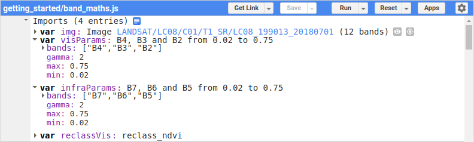
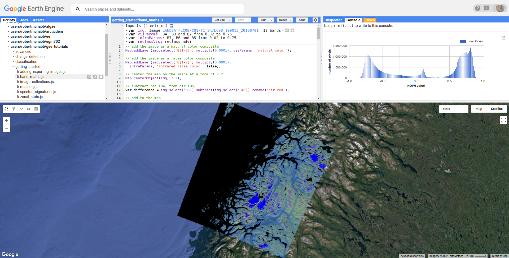
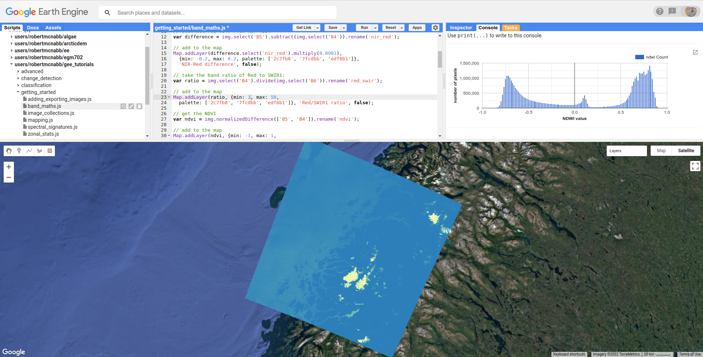
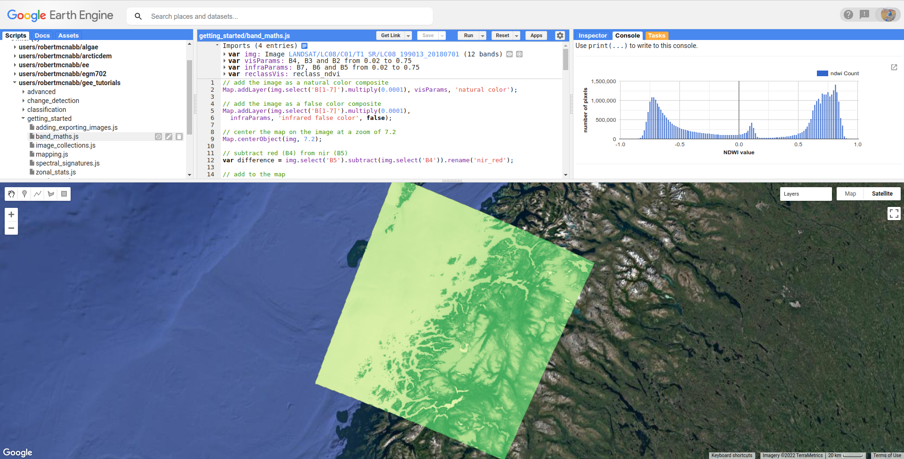
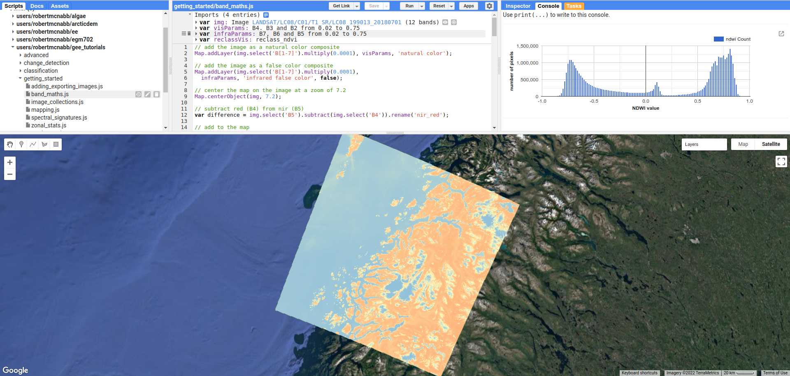

band maths
Contents
band maths#
In this tutorial, you’ll see how you can use band math(s) to enhance the differences in reflectance of different surface types, in order to help identify these features in images.
In particular, after finishing this tutorial, you will:
be able to use arithmetic operations on different bands
apply normalized difference operations
reclassify images
plot histograms
apply thresholds to classify surface types
reminder: spectral signatures#
In the spectral signatures signatures tutorial, we saw how the spectral reflectances for different surfaces varies with wavelength:

In the plot above, we see that (fresh) snow is very bright in visible wavelengths (0.4 – 0.7 µm), fairly bright in the near infrared band (~0.9 µm), and has almost no reflectance in the shortwave infrared (SWIR), above 1.6 µm or so.
Forest, on the other hand, is quite dark in visible wavelengths, brighter in the near infrared (NIR), and still brighter in the SWIR than in the visible wavelengths.
Water is dark almost everywhere, though turbid water is quite a bit brighter, at least in visible and NIR wavelengths.
One of the ways that we can try to start distinguishing between different surface types is by using arithmetic operations (addition, subtraction, multiplication, division) to enhance the differences.
Note
When you run the script, each of the Images discussed below will load in the Map, but the only visible Image will be the natural color composite. To view each of the Images, you will need to toggle them to visible using the Layers menu.
color composites#
In this tutorial, we’re looking at a 1 July 2018 (Happy Canada Day!) Landsat image of Nordland County, Norway. In the center of the image, we can see two large glaciers, Vestisen and Østisen (collectively, Svartisen), along with a few other glaciers and snow-covered mountains in the northeastern part of the image.
At the beginning of the script, we’ve added our img import to the Map using two different
visualization parameters, visParams and infraParams:
// add the image as a natural color composite
Map.addLayer(img.select('B[1-7]').multiply(0.0001), visParams, 'natural color');
// add the image as a false color composite
Map.addLayer(img.select('B[1-7]').multiply(0.0001),
infraParams, 'infrared false color', false);
If you expand these two imports by clicking on the arrow next to each one:
{kind=link}
you can see that the “natural color” image is displayed using OLI bands 4, 3, and 2, corresponding
to visible red, green, and blue light, respectively:
{kind=link}
As covered in the manual mapping (digitizing) tutorial, this broadly speaking shows the world as we see it, but it’s
not the only way to view images. Depending on the application, other color combinations can help us enhance
certain features, making the image somewhat easier to interpret.
The “infrared false color” image is displayed using an RGB composite of the SWIR2, SWIR1, and NIR bands (OLI bands 7, 6, and 5, respectively), which colors snow and ice in a bright blue:
{kind=link}
The reason for this is that snow and ice have very little reflectance at shortwave infrared wavelengths - as a
result, the RGB value for these pixels is very close to (0, 0, 255). We can also see that water, which has very
little reflectance at infrared wavelengths, appears almost black, corresponding to an RGB value of (0, 0, 0).
Meanwhile, the vegetation and other land surfaces are some mixture of blue, green, and yellow – vegetation typically
has high reflectance in the near infrared, with reflectance decreasing with increasing wavelength in the shortwave infrared.
band arithmetic (maths)#
Color composites are one way that we can aid in image interpretation, and they can be especially useful for manual interpretation.
To fully exploit the relationships between spectral bands, though, we often turn to band arithmetic, or band math(s).
One of the simplest things that we can do is take the difference between two bands – this helps highlight areas that are brighter (have a higher reflectance) or darker (have a lower reflectance) in one band compared to another.
In the script, we’ve used ee.Image.select() (documentation)
to select the near infrared band (OLI band 5), along with ee.Image.subtract()
(documentation)
to take the difference between the near infrared and red (OLI band 4) reflectances:
var difference = img.select('B5').subtract(img.select('B4')).rename('nir_red');
you can also see that we’ve used ee.Image.rename() (documentation)
to change the name of the band to nir_red – otherwise, it will have the same name as the first band we’ve used (B5).
We then add this to the map using a color palette
to determine how the image values should be displayed – in this case, ranging from a bluish color
(hex color 2c7fb8) for values close to the min, a greenish color (7fcdbb)
for values close to 0, and a yellowish color (edf8b1) for values close to the max:
{kind=link}
Note
To pick the color palettes displayed in this tutorial, I used the excellent colorbrewer2.org.
This helps differentiate between vegetation (yellow) and other surfaces - because healthy vegetation tends to have much higher reflectance in the near infrared compared to visible red bands, we see a strong positive difference between the two.
In addition to subtraction, we can also take the ratio of the visible red and SWIR1 bands:
var ratio = img.select('B4').divide(img.select('B6')).rename('red_swir');
This helps to highlight snow and ice1 – because snow and ice are bright (high reflectance) at visible wavelengths, but dark (low reflectance) at shortwave infrared wavelengths, this ratio is very high for snow and ice, but much closer to 1 for most other surfaces.
By adding this Image to the map with a color scale ranging between 1 and 50:
Map.addLayer(ratio, {min: 1, max: 50,
palette: ['2c7fb8', '7fcdbb', 'edf8b1']}, 'Red/SWIR1 ratio', false);
we see that most of the land surface is solid blue (values close to or less than 1), water has higher values but is still mostly blue (values closer to 1), and snow/ice is mostly solid yellow (values much greater than 1):
{kind=link}
In addition to subtraction and division, ee.Image has methods for:
addition (
add, documentation)multiplication (
multiply, documentation)exponentiation (
pow, documentation)
as well as trigonmentric functions like sin, cos, tan, and so on. For a full list of the available functions,
have a look along the side bar in the ee.Image documentation.
normalized differences#
A normalized difference is where we take the difference between two bands of an image, and normalize it by dividing the difference by the sum of the two bands:
Like a band ratio, this has the benefit of enhancing the differences between the two bands: pixels where \(B_1 < B_2\) will have values less than 0 ranging all the way to –1; where \(B_1 > B_2\), the normalized difference will be positive, up to +1.
This also has the benefit of being bounded between –1 and +1, making it easier to compare values from one image to the next.
Note
Even though this is a normalized “difference”, it’s a nonlinear transformation of a spectral ratio, not a spectral difference.
normalized difference vegetation index#
Probably the most common, and certainly one of the oldest, normalized difference indices is the normalized difference vegetation index (NDVI2), calculated as the normalized difference between the near-infrared and visible red reflectance:
Because of how common normalize difference indices are in remote sensing, GEE has a dedicated method
for computing a normlized difference, ee.Image.normalizedDifference()
(documentation).
To calculate the NDVI using a Landsat OLI image, then, we use ee.Image.normalizedDifference()
using the near infrared (B5) and red (B4) bands:
var ndvi = img.normalizedDifference(['B5', 'B4']).rename('ndvi');
Because most healthy vegetation has significantly higher reflectance at NIR wavelengths compared to visible red wavelengths, high NDVI values typically correspond to healthy vegetation.
When we add the NDVI Image to the Map using the given palette, ranging from –1 (hex value f7fcb9)
to 1 (hex value 31a354):
Map.addLayer(ndvi, {min: -1, max: 1,
palette: ['f7fcb9', 'addd8e', '31a354']}, 'NDVI', false);
we can see that water and snow/ice have NDVI values close to zero or negative, represented by more yellow colors in the Map, while vegetated areas such as forests have NDVI values closer to 1, and are represented by darker green colors in the Map.
{kind=link}
normalized difference snow index#
Earlier, we saw the ratio of the visible red and SWIR1 bands, highlighting snow and ice. A commonly-used normalized difference index for snow and ice is the normalized difference snow (and ice) index, or NDSI3.
The NDSI is calculated as the normalized difference of the visible green and shortwave infrared bands:
To calculate the NDVI using a Landsat OLI image, then, we use ee.Image.normalizedDifference()
with the green (B3) and shortwave infrared 1 (B6) bands:
var ndsi = img.normalizedDifference(['B3', 'B6']).rename('ndsi');
In the script, we add this to the Map using a color palette ranging from from a reddish color
(hex color fc8d59) at low values (–1), to more yellow colors (hex color ffffbf) at values
near 0, to blue colors (hex color 91bfdb):
Map.addLayer(ndsi, {min: -1, max: 1,
palette: ['fc8d59', 'ffffbf', '91bfdb']}, 'NDSI', false);
In the resulting Map, we can see how most of the land area has a negative or close to zero NDSI value, snow/ice have very high (close to 1) NDSI values, and water has intermediate positive NDSI values:
{kind=link}
normalized difference water index#
Another commonly used normalized difference index is the normalized difference water index (NDWI45), which helps to identify water bodies in a satellite image:
As we see in the spectral signature plot above, water typically has higher reflectance at visible green wavelengths than in the near infrared, where it has almost no reflectance whatsover. As a result, the NDWI for water is typically close to 1, and for most other surfaces it’s closer to zero or even negative (as it is for vegetation, for instance).
In GEE for Landsat 8 OLI, we calculate the NDWI for an image as follows:
var ndwi = img.normalizedDifference(['B3', 'B5']).rename('ndwi');
and we can add it to the map using a palette ranging from yellow to blue:
Map.addLayer(ndwi, {min: -0.5, max: 0.5,
palette: ['edf8b1', '7fcdbb', '2c7fb8']}, 'NDWI', false);
{kind=link}
Here, we can see that most of the land surface is yellow (indicating NDWI values near or below -0.5), while the ocean and lakes show up as mostly solid blue
(indicating values above 0.5). The snow-covered peaks and glaciers show up somewhere in the middle, with NDWI values somewhere near 0.
more complicated expressions#
In addition to methods such as ee.Image.divide() or ee.Image.normalizedDifference(), we can also use
ee.Image.expression() (documentation)
to write more complicated formulas.
ee.Image.expression() takes two arguments: expression, a String representing the expression to apply,
and map, a Dictionary that maps input images to the expression.
In this example, we’re creating a grayscale image, by taking a weighted combination of three input bands: the near infrared, red, and green bands. The equation we’re using is:
using ee.Image.expression(), this looks like:
var gray = img.expression({
expression: '(0.52 * NIR) + (0.25 * R) + (0.23 * G)',
map: {'NIR': img.select('B5'),
'R': img.select('B4'),
'G': img.select('B3')}
}).rename('gray').multiply(0.0001);
here, you can see that each key of map corresponds to the variables in expression:
NIR is B5 of the input image; R is B4, and G is B3.
When added to the Map, the new grayscale image looks like this:
{kind=link}
reclassifying#
In GIS, “reclassifying” a raster means replacing the values of a raster with different values. For example, we might want to group the values of our NDVI Image like so:
range |
new value |
|---|---|
[-1, -0.5] |
1 |
(-0.5, 0] |
2 |
(0, 0.5] |
3 |
(0.5, 1] |
4 |
one way that we can do this in GEE is using ee.Image.where()
(documentation).
ee.Image.where() takes two inputs:
test, the test image that determines which input pixels are returnedvalue, the value to use wheretestis not zero.
The code to reclassify the NDVI Image looks like this:
var ndviReclass = ee.Image(1)
.where(ndvi.gte(-1).and(ndvi.lte(-0.5)), 1)
.where(ndvi.gt(-0.5).and(ndvi.lte(0)), 2)
.where(ndvi.gt(0).and(ndvi.lte(0.5)), 3)
.where(ndvi.gt(0.5).and(ndvi.lte(1)), 4)
.rename('reclass_ndvi')
.clip(ndvi.geometry());
First, we create an Image with a constant value (ee.Image(1)), then apply
each of our categories.
For the first category, \(-1\leq\rm{NDVI}\leq -0.5\), the line looks like this:
.where(ndvi.gte(-1).and(ndvi.lte(-0.5)), 1)
The test here is where \(-1\leq\rm{NDVI}\) and \(\rm{NDVI}\leq -0.5\).
ee.Image.gte() (documentation)
returns true wherever the first Image value is greater than or equal to the second value,
and false wherever this is not the case. Similarly, ee.Image.gt()
(documentation) tests whether
the first value is greater than (not equal to) the second value; ee.Image.lte()
(documentation) tests whether
the first value is less than or equal to the second; and ee.Image.lt()
(documentation) tests whether
the first value is less than (not equal to) the second value.
For each of these, we use ee.Image.and() (documentation)
to test whether both conditions are true. Wherever both conditions are true, the output in the ndviReclass Image
will be equal to 1.
The remaining lines repeat this for the other categories, before using ee.Image.rename()
to rename the output band, and finally to clip the Image to the geometry of the ndvi Image.
Note
Without this last step, ndviReclass would have a global extent.
When we add the reclassified image to the Map using the reclassVis visualization parameters imported at the
top of the script:
{kind=link}
Category 1 (\(-1\leq\rm{NDVI}\leq -0.5\)) has a light yellow color (hex color ffffcc`), category 2 has
a pale green color (hex color ``c2e699), and categories 3 and 4 have darker green colors (hex colors 78c679
and 238443, respectively).
plotting a histogram#
One exceedingly useful way to view information about the distribution of pixel values in an Image is with a histogram.
To create a histogram in GEE, we use ui.Chart.image.histogram()
(documentation).
In the script, the following block of code will create a histogram Chart:
var histogram = ui.Chart.image.histogram({
image: ndwi,
maxPixels: 1e13
}).setOptions({
hAxis: {
title: 'NDWI value',
titleTextStyle: {italic: false, bold: true}
},
vAxis: {
title: 'number of pixels',
titleTextStyle: {italic: false, bold: true}
},
});
In the above, we’re using two arguments to ui.Chart.image.histogram():
image, the Image to use to generate the histogram (thendwiImage)maxPixels, to override the default maximum number of pixels (1e6 pixels).
As we’ve seen before, we then use ui.Chart.setOptions() to set the axis labels for the Chart.
To view the Chart, we have to use print() to display it in the Console:
{kind=link}
This histogram shows effectively three different groups: a group with a peak around –0.7, representing
most of the land pixels (e.g., forest, rock/soil); a second, smaller group with a peak around 0.1, representing
snow/ice, and the third, largest group with a peak somewhere around 0.75, representing water.
thresholding#
From the histogram above, we can select a threshold value to separate out, or classify, “water” and “not water” pixels. Any pixels with an NDWI value greater than the threshold represent “water”, while pixels with a value less than the threshold represent “not water.”
Have a look at the following function:
function getMask(img, thresh){
var mask = img.gte(thresh);
return mask.updateMask(mask.neq(0)).reduceToVectors({maxPixels: 1e13});
}
This function takes two arguments: img, an Image to threshold,
and thresh, the threshold value to use.
As we saw above with reclassification, we use ee.Image.gte() to get an image with pixel
values equal to 1 anywhere that img is greater than (or equal to) thresh, and
0 everywhere else.
This line:
mask.updateMask(mask.neq(0)).reduceToVectors({maxPixels: 1e13});
uses ee.Image.updateMask() (documentation),
along with ee.Image.neq() (documentation), to
mask any pixels where the NDWI value is less than the threshold.
Finally, we use ee.Image.reduceToVectors() (documentation)
to convert the Image to a FeatureCollection.
We then call this function to the ndwi Image with a threshold value of 0.2, to create a water mask:
var water = getMask(ndwi, 0.2);
and add the water mask FeatureCollection to the Map:
Map.addLayer(water, {}, 'Water Mask', false);
{kind=link}
Finally, the script exports the water mask to Google Drive, so that you can download it to your computer and use it in your
GIS software of choice.
next steps#
In this tutorial, we’ve seen how to apply different arithmetic operations to enhance the spectral differences between different
surface types, to help aid interpretation. We’ve applied a few different normalized difference operations, and seen how to
use ee.Image.expression() to apply more complicated arithmetic expressions. We’ve also seen how to reclassify images, plot histograms,
and apply thresholds to help classify different surface types.
If you’re interested in some additional practice, here are some suggestions:
try some different band ratios or differences – is there a ratio or normalized difference that works well to highlight the built-up areas in the Image?
modify the script to create a glacier (+ snow) mask
note:
ui.Chart.image.histogram()will plot Images with multiple bands. Create an Image with the NDVI, NDWI, and NDSI Images as separate bands, then create a histogram that plots all three bands.
references and notes#
- 1
see, e.g., Albert, T.H. (2002). Polar Geogr., 26, 210–226. doi: 10.1080/789610193
- 2
Rouse, J. W., et al. (1974). Proceedings, 3rd Earth Resource Technology Satellite (ERTS) Symposium 1, 48–62. [open-source link]
- 3
Hall, D.K., et al. (1995). Rem. Sens. Env. 54, 127–140. doi: 10.1016/0034-4257(95)00137-P
- 4
McFeeters, S. K. (1996). Int. J. Rem. Sens., 17(7), 1425–1432. doi: 10.1080/01431169608948714
- 5
Note that there are, confusingly, two NDWIs in common use - this one, for water bodies, and a second, using the NIR and SWIR bands, for measuring moisture content in vegetation.